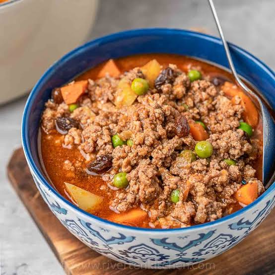

GINILING
Home
Back to Recipes

Giniling is a Filipino dish made from ground meat, usually pork or beef,
that is sautéed with garlic, onions, and tomatoes. It is often seasoned with
soy sauce, fish sauce, and other spices to enhance its flavor. Giniling can
be served as a main dish with rice or used as a filling for various Filipino
dishes such as lumpia (spring rolls) or empanadas. It is a versatile and
popular dish in Filipino cuisine.
It is a savory, budget-friendly one-pot meal made by sautéing ground meat
(usually pork or beef) with garlic, onions, and tomatoes.
INGREDIENTS
- 1/2 lb ground pork
- 1 1/2 cups potatoes diced
- 1 cup carrots diced
- 8 ounces tomato sauce
- 6 cloves garlic crushed
- 1 medium-sized onion minced
- 1 teaspoon granulated sugar
- 1 piece beef or pork cube
- 4 boiled eggs shelled (optional)
- Salt and pepper to taste
- 3 tablespoons cooking oil
- 1 cup water
INSTRUCTIONS STEP BY STEP
- Add the garlic and onion, sauté until fragrant.
- Add the ground pork and cook until browned.
- Pour in the tomato sauce and water, stir to combine.
- Add the beef or pork cube, sugar, salt, and pepper. Stir well.
- Cover and simmer for about 15-20 minutes or until the vegetables are tender.
- If using boiled eggs, add them to the pan during the last 5 minutes of cooking.
- Adjust seasoning to taste and serve hot with rice.
- Add the diced potatoes and carrots, cook for a few minutes.
- In a pan, heat the cooking oil over medium heat.
Back to Recipes